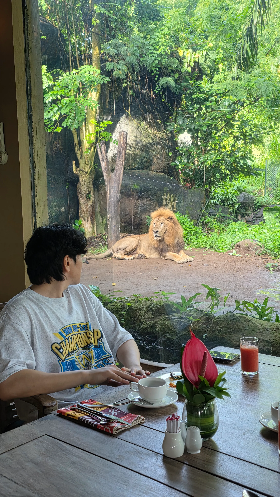
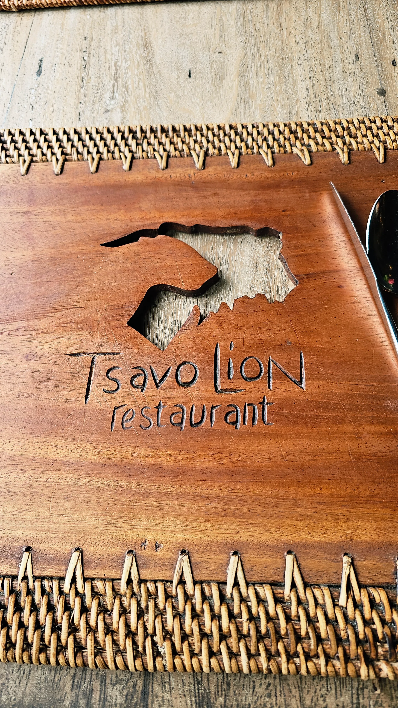
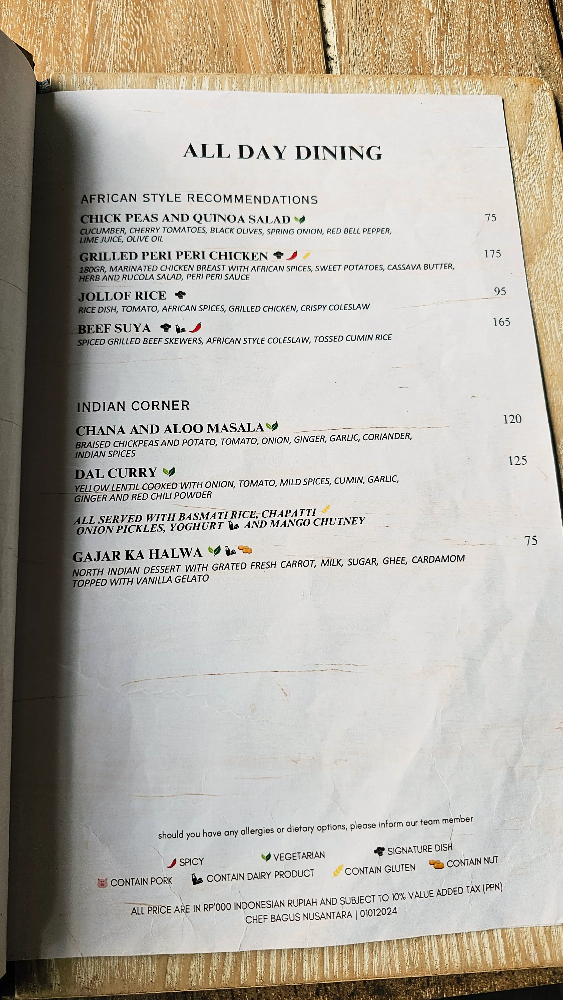
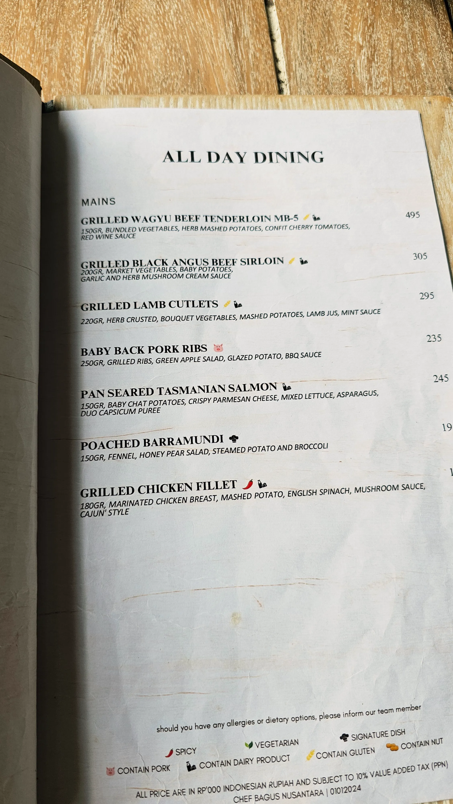
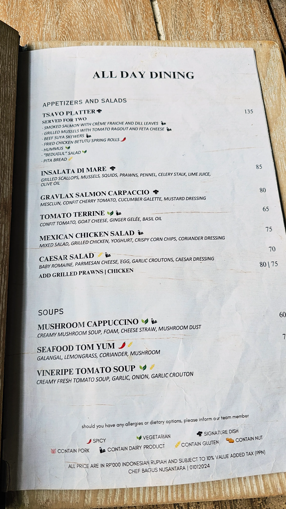
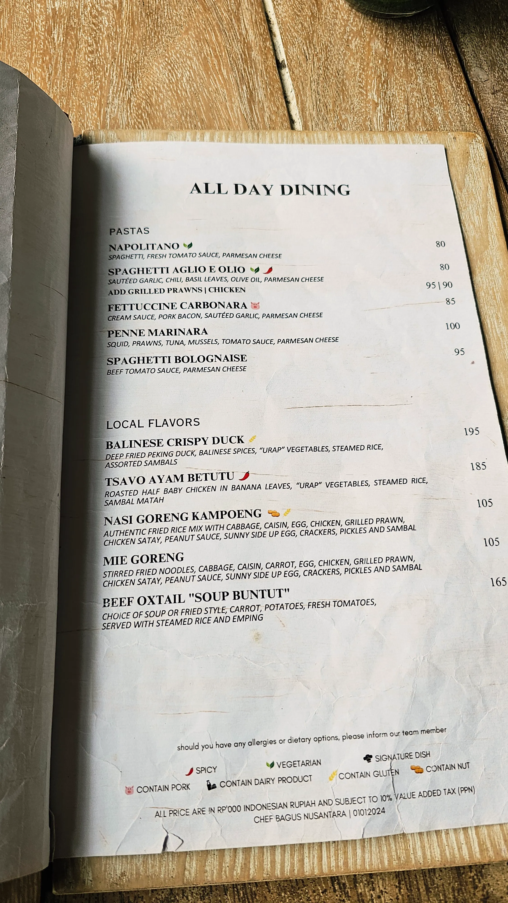
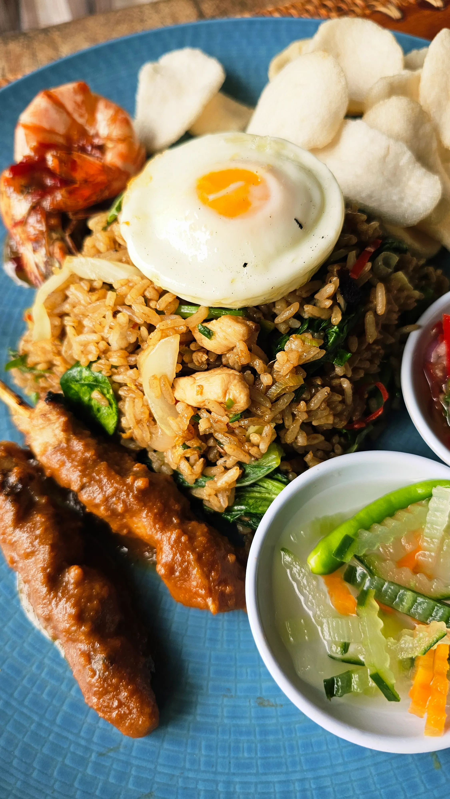
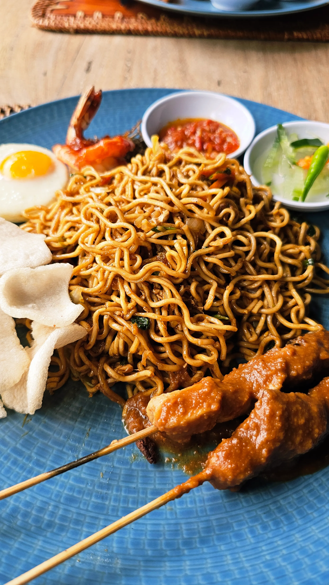

라이언 레스토랑(Tsavo Lion Restaurant)
발리 마라리버 사파리 롯지에 묵으면서 방문했던 라이언 레스토랑(Tsavo Lion Restaurant) 솔직 후기

1) 라이언 레스토랑(Tsavo Lion Restaurant)
위치: Serongga, Gianyar, Gianyar Regency, Bali 80515
운영 시간: AM 7:00~PM 9:00
마라리버 사파리 롯지에 위치한 라이언 레스토랑(Tsavo Lion Restaurant)은 화장실에서 사자들을 볼 수 있는 곳으로 조식 때는
사자와 함께 사진을 찍을 수도 있는 색다른 경험을 주는 곳이다.





2) 좋은 점
리조트에서 운영을 하지만 생각보다 비싸지 않고 가성비가 좋은 편입니다. 맛도 좋고 간단하게 한 끼 하기에는 아주 좋은 선택지가 될 수 있습니다. 다만, 사람들의 후기에서 오리고기는 먹지말라고 하니 참고해볼만 합니다.
3) 아쉬운 점
레스토랑이 넓어서 에어컨이 많지만 무척이나 덥고 화장실은 남녀 각각 나눠져 있긴 하지만 쾌적한 편은 아닙니다. 레스토랑에 개미도 출몰할 가능성이 있으니 주의해야 합니다.

4) 이런 사람에게 추천합니다
멀리 나가지 않고 적당히 가성비 좋은 음식을 먹고 싶은 사람, 리조트에서 모든 것을 해결하려는 분들에게는 추천합니다. 저녁은 모르겠지만 점심으로 한 끼 하기에는 좋은 선택지가 될 것 같습니다. 특히 조식때는 사자들을 보면서 밥을 먹을 수 있기 때문에 아이를 동반한 여행자들이라면 꼭 추천하는 레스토랑입니다.

5) 결론 한 줄
마라리버 사파리 롯지에 묵는다면 어쩔 수 없는 선택, 그러나 괜찮은 맛과 착한 가격으로 한 끼 맛있게 즐길 수 있는 곳 입니다. 특히나 사자를 볼 수 있어서 추천 포인트가 됐습니다.